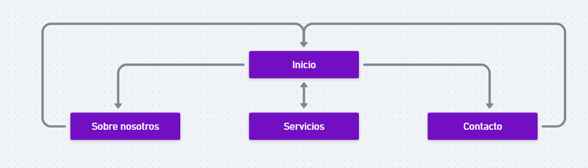
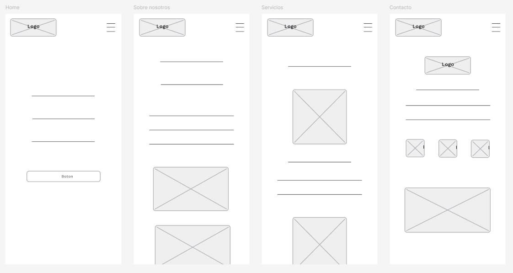
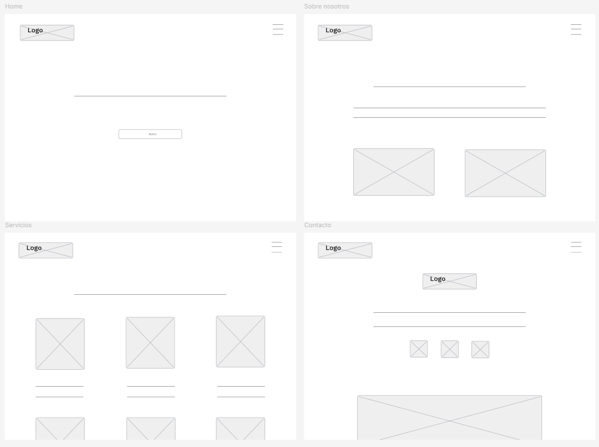
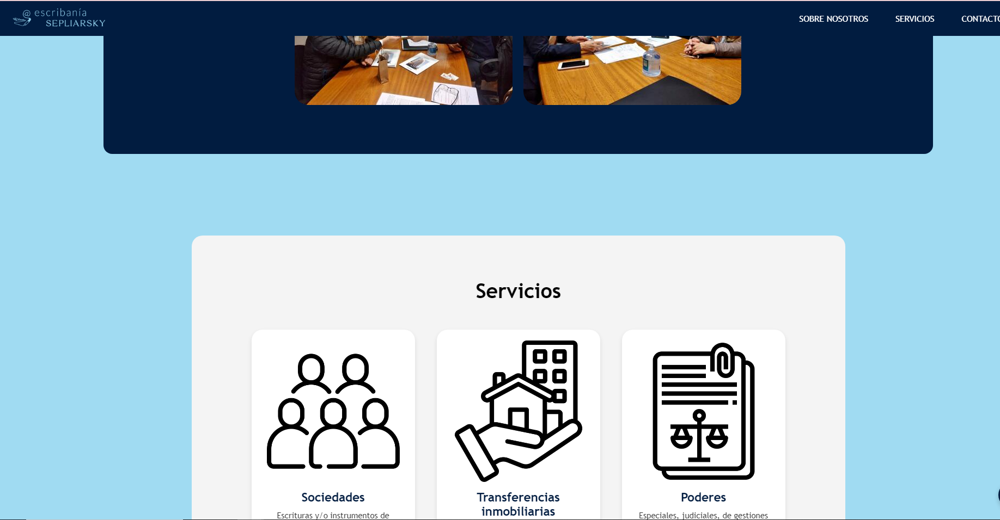
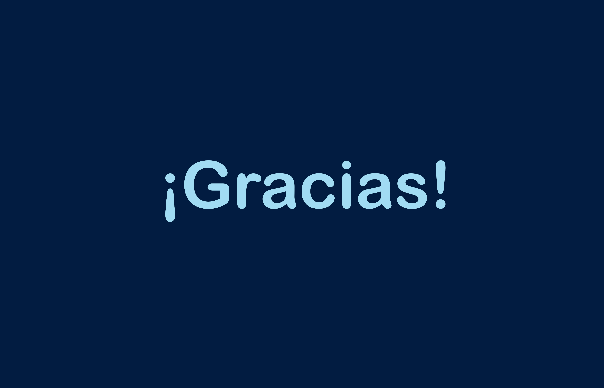

La página web fue desarrollada con el objetivo de proporcionar una experiencia de usuario accesible y funcional. Su propósito es ofrecer a los visitantes una navegación clara y una interacción amigable con el contenido.
El objetivo de la página es brindar la información relevante de "Escribania Sepliarsky" para que todo el público que navegue a través de la página conozca a los escribanos, servicios e información necesaria para poder adquirir estos servicios.
Funcionalidades Clave: Galería de imágenes, formulario de contacto, video que se abre en una nueva pestaña, botón de desplazamiento hacia arriba y animaciones en los botones.
Optimización para Dispositivos: La página es responsive y se adapta a diferentes tamaños de pantalla tanto de móviles como de computadoras.
Un mapa de sitio proporciona información sobre los elementos de un sitio web, así como la relación entre ellos. Estos mapas son útiles para visualizar la estructura del sitio.
Los wireframes muestran la estructura básica de la página antes del desarrollo. Ayudaron a definir la organización de los elementos y asegurar un flujo de navegación intuitivo. En esta sección se presentan los bocetos iniciales.
 Paleta de Colores: Colores fríos y profesionales, como el azul oscuro (#011C40) y tonos grises claros.
Tipografía: Tipografía limpia y fácil de leer para una apariencia profesional. La fuente utilizada es: 'Trebuchet MS'
Iconografía: Iconos simples y de fácil comprensión que mejoran la navegación y brindan orientación visual. Asi tambien se utiliza el logo de "Escribania sepliarsky" varias veces en la web.
Accesibilidad: Considere la accesibilidad de todos los elementos, como el contraste de colores y el tamaño de las fuentes.
Imagen donde se muestra colores, tipografia, iconos y logo.
Informes: Se realizaron informes para marcar aciertos y errores de la pagina lo que marco una falta de un boton de desplazamiento hacia arriba lo que ayudaria a la navegacion a traves de la pagina que luego fue corregido.
Comentarios:
"Pondría una opción de volver hacia arriba, para hacer mas rápida la navegación"
"Sería bueno agregar un botón en algún lado para volver hacía arriba lo cual haría que todo sea más rápido y que el usuario pueda acceder fácilmente a la información"
Resultados: Se puede observar que la pagina logro su objetivo en cuanto a idea, diseño, y proposito logrando que el usuario que ingrese a la pagina pueda navegar a traves de ella intuitivamente adquiriendo la informacion necesaria de "Escribania Sepliarsky" para que si se requiere proveerse de estos servicios el usuario pueda obtener la suficiente informacion para generar confianza acerca de esta empresa.
Este proyecto logró cumplir con sus objetivos de accesibilidad, funcionalidad y diseño. Algo que se fue trabajando mucho a lo largo de la cursada agregando clase a clase ciertas secciones y corrigiendo errores para que la pagina cumpla con todo esto.
